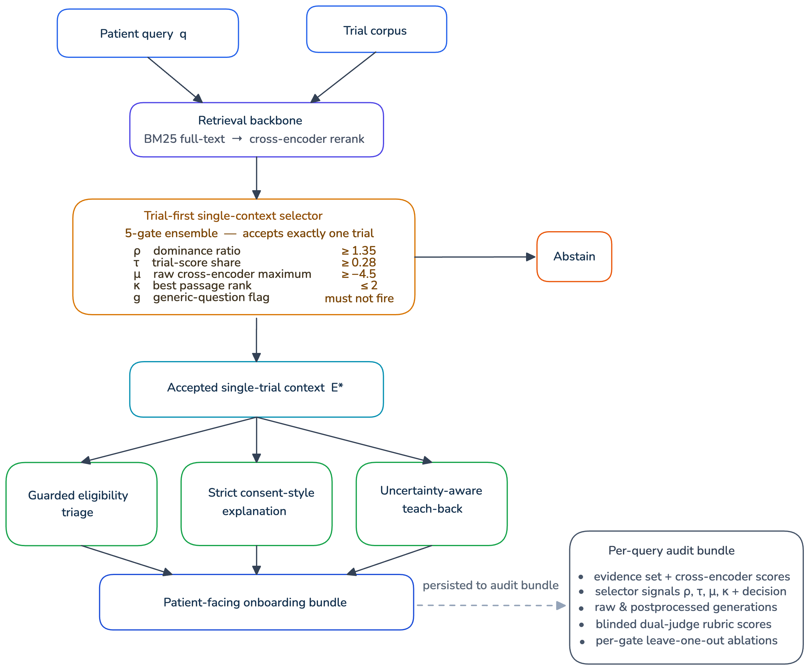
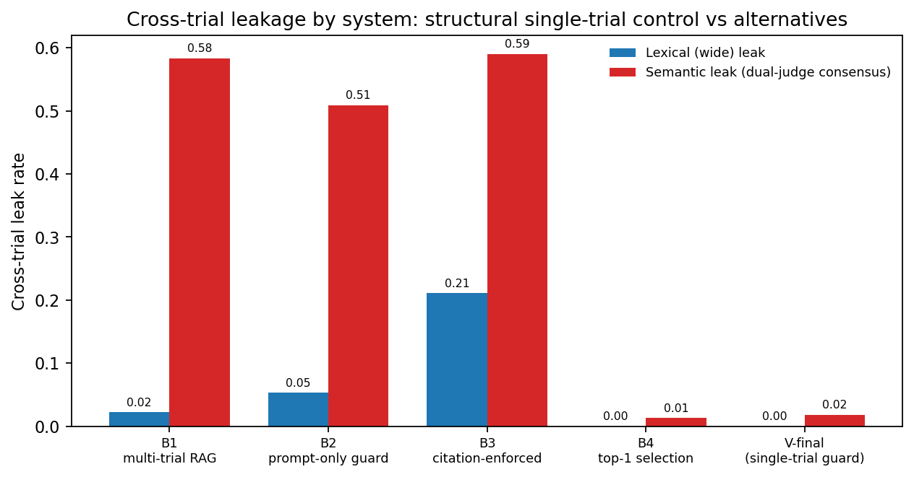
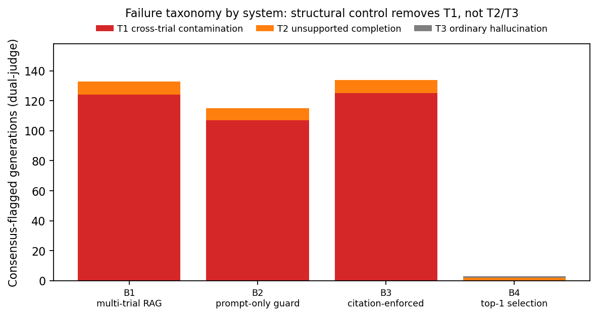
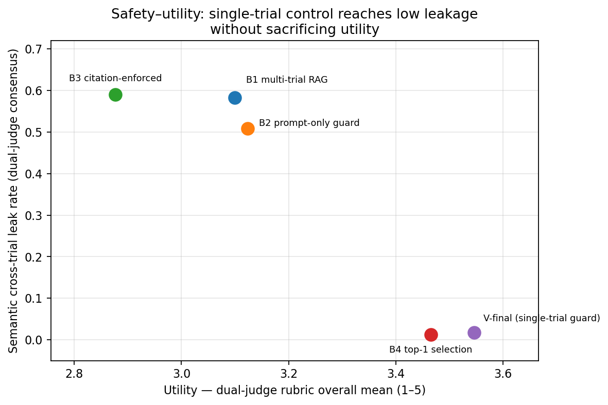

Overview
Patient-facing AI for clinical-trial onboarding has a specific failure mode: when several trials are in context, a model can blend eligibility criteria, procedures, or risks from one trial into its explanation of another. Such cross-trial contamination is fluent and hard to spot, and in a consent-style conversation it is a safety problem.
This project builds an auditable trial-first single-context pipeline. It selects one dominant clinical trial before generation or abstains. It then restricts eligibility triage, consent-style explanation, and teach-back to evidence from that trial only. The system is positioned for coordinator-supervised preclinical onboarding, not autonomous eligibility decisions.
🏗️ Pipeline Architecture

Figure 1: Retrieval, a five-gate trial-first selector that accepts exactly one trial or abstains, single-trial generation of the three onboarding outputs, and a per-query audit bundle.
- Retrieval: BM25 full-text search followed by cross-encoder reranking over the trial corpus.
- Trial-first selector: a five-gate ensemble (dominance ratio, trial-score share, raw cross-encoder maximum, best-passage rank, generic-question flag). It accepts exactly one trial or abstains.
- Grounded generation: guarded eligibility triage, strict consent-style explanation, and uncertainty-aware teach-back, all restricted to the accepted trial's evidence. A strict postprocessor rewrites uncited fields, and a JSON schema collapses non-parsing outputs to cannot-determine.
- Audit bundle: evidence and scores, selector signals and decision, raw and postprocessed generations, and judge scores are persisted per query.
🔎 Leak Audit
Three pre-specified detectors instrument the cross-trial leak channel across 684 generations (114 cases × 6 model families):
| Detector | Flagged |
|---|---|
| Lexical — narrow NCT-ID match | 0 / 684 |
| Lexical — wide entity-resolved match | 0 / 684 |
| Semantic — dual-LLM consensus | 12 / 684 (1.75%) |
Manual review of the 12 consensus-flagged cases found eight genuine paraphrased cross-trial errors. The remainder were mixed-attribution errors or judge over-flags.
📊 Why Structure Matters: Baselines
Standard mitigation strategies were compared against structural single-trial control:

Figure 2: Multi-trial RAG, prompt-only guarding, and citation enforcement leak at 50.9–59.0% (semantic consensus). Structural single-trial systems stay at 1.3–1.8%.

Figure 3: Failure taxonomy. Structural control removes cross-trial contamination (T1). The residual errors are unsupported completion (T2) and ordinary hallucination (T3).
🛡️ Claim-Level NLI Verification
A claim-level DeBERTa NLI verifier redacts a claim when a non-selected trial entails it better than the selected trial. It removed all eight manually confirmed semantic leaks at a 15.1% per-claim utility cost.

Figure 4: Safety–utility trade-off. Single-trial control reaches low leakage without sacrificing rubric-judged utility.
🚀 Key Contributions
- A trial-first, single-context design that makes cross-trial contamination a structural impossibility at the retrieval layer, with explicit abstention.
- A multi-detector audit (lexical and dual-LLM semantic consensus) with manual adjudication across six model families.
- Evidence that prompt-based and citation-based mitigations do not close the leak channel, while structural control does.
- A claim-level NLI verifier that removes the remaining genuine leaks at a quantified utility cost.
📝 Citation
@unpublished{islam2026structural,
title = {Structural Safety of AI for Patient Onboarding in Clinical Trials Using a Grounded Pipeline},
author = {Islam, Md Zabirul and Pucar, Darko and Whitlow, Christopher and Liu, Chi and Wang, Ge},
note = {Manuscript in preparation},
year = {2026}
}